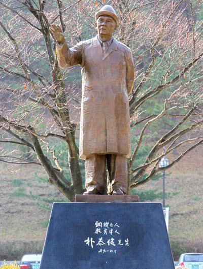
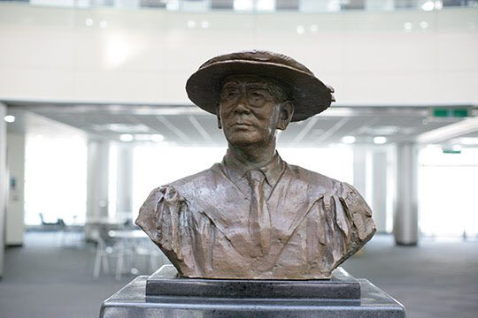

보도일 2015-06-30출처 조선일보 프리미엄조선 연재
<①편에계속>
박태준은 요양을 하러 반려자와 평창으로 갔다. 며칠 쉬어서 일본 여행을 계획할 때 결정했던 대로 구미 행사에는 참석할 생각이었다. 그래서 축사를 생각했다. 어쩌면 그의 생애에 최후 연설이 될지 모를 그것은 11월 14일 경북 구미시 상모동 ‘박정희 대통령 생가’에서 열리는 ‘박정희 대통령 동상 제막식’이었다. 구미시장의 초청을 받은 그는 짧은 축사에 대해 깊은 사색에 잠기곤 했다.
2008년 가을에 포항시민을 대표할 만한 최영만 포항시의회 의장이 찾아와 포항시민의 성금을 모아 형산강 다리 앞에 ‘박태준 동상’을 세우겠다고 제안했을 때, 그는 단호히 사양했었다. 대단히 감사한 일이지만 아직 박정희 대통령의 동상도 제대로 세우지 못한 상황에서 내가 먼저 받을 수는 없는 것이라고….
그랬던 그가 2011년 12월 3일 포스텍 개교 25주년을 맞아 포스텍 노벨동산에서 ‘설립이사장 조각상 제막식’을 갖겠다는 제안에 대해서는 어렵사리 수락을 했다. 교내(校內)라는 위치도 감안했지만 그에 앞서 박정희 대통령의 동상이 제막된다는 점을 고려했던 것이다. 포스텍 노벨동산의 높이 2미터짜리 아담한 ‘박태준 조각상’은 포항시민, 포스텍 사람들을 비롯한 22,905명이 성금을 모아서 건립했다.

노부부의 평창 요양은 오붓했다. 그러나 즐거운 시간을 오래 누릴 수 없었다. 그의 기침이 머잖아 엄청난 사단을 일으킬 듯했다. 더 이상 그냥 기다려볼 수만은 없는 지경에 도달해 있었다. 남은 것은 결심이었다. 목숨을 걸어야 하는 결심. 주치의도 가족도 그의 결심을 주문했다.
“가자. 한 번 더 하자.”
그가 결심했다. 또다시 목숨을 걸고 수술대 위에 눕겠다는 뜻이었다.
11월 8일 이른 오후, 박태준은 연세대 세브란스병원 본관에 들어섰다. 주치의 장준 박사의 안내에 따라 움직이는 그의 걸음걸이는 평소처럼 곧은 자세였다. 그러나 그것은 사생결단의 시간을 향하여 걸어가는 걸음이었다. 그리고 박정희 대통령 동상 제막식에 참석할 수 없는 길로 들어서는 것이기도 했다. 그가 비서 신형구에게 일렀다. 구미시장과 박지만에게 갑작스런 내 변고를 통지해주라고.
이튿날 수술을 전제로 하는 여러 가지 검사가 선행되었다. 그는 웃는 얼굴로 의료진과 편안히 대화를 나누었다. 십여 년 전, 2001년 여름의 뉴욕 대수술이 화제에 오르기도 했다. 속으로 그는 생각했다. 그때보다 나이는 열 살을 더 먹었지만 그때나 이번에나 그게 그거지 뭐. 그의 몸은 수술할 수 있는 완벽한 데이터를 보여주었다. 그놈의 기침, 그것을 일으키는 왼쪽 폐만 아니라면 다른 건강상태는 까딱없다는 뜻이었다.
수술 시간은 입원 나흘째인 11월 11일 아침 7시 30분으로 잡혔다. 집도의는 흉부외과 분야의 권위자 정경영 교수. 그가 모든 가능성에 대한 계획을 환자와 가족에게 설명하고 동의를 구했다. 박태준은 수술복으로 갈아입으며 문득 속으로 혼잣말을 했다. ‘이게 세 번째지. 그래, 세 번째구나.’ 메스가 자신의 몸을 가르는 것이 세 번째라는 회고였다. 첫 번째는 저 1950년 혹한의 흥남 야전병원에서 마취도 없이 몸을 맡겨야 했던 맹장수술, 두 번째는 뉴욕의 대수술, 그리고 이번. 그는 어금니를 깨물었다.

이동식 침대에 누워 입원실에서 수술실까지 이동하는 물리적 거리는 아주 짧았다. 그러나 환자와 가족에게는 그것이 얼마나 먼 거리인지 몰랐다. 만감이 교차한 그 끝에 영원한 작별의 순간이 어른어른 그려지기도 하는 지점, 그럼에도 마치 나쁜 징조를 물리치려는 것처럼 의연한 자세를 지켜야 하는 잔인한 지점….